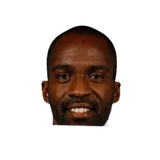

Candace Buckner:Ernie Grunfeld on Austin Rivers:
“One is the things that we really like about him, he plays with a chip on his shoulder.”

Every quote from Ernie Grunfeld about Austin Rivers in the archive, newest first. Each one links to its original source.
Candace Buckner:Ernie Grunfeld on Austin Rivers:
“One is the things that we really like about him, he plays with a chip on his shoulder.”
“Acquiring Austin gives us another versatile, experienced player who provides scoring and playmaking,”

Ernie Grunfeld on Martell Webster3 quotes